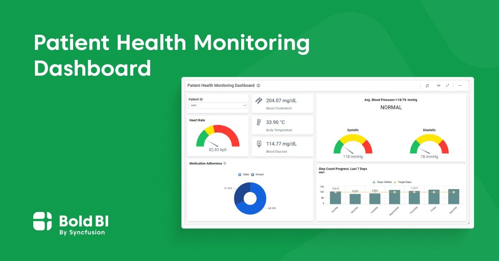

Health Monitoring App
This project is about building a comprehensive health monitoring application that empowers users to track and manage their health effectively. Participants will focus on implementing the following features:
- Real-time tracking of vital signs such as heart rate, blood pressure, and oxygen levels.
- Daily activity monitoring, including steps, sleep, and calorie consumption.
- Integration of wearable devices for data synchronization.
- Personalized health insights and recommendations based on user data.
This project is a great fit for developers, data analysts, and UI/UX designers who are passionate about healthcare innovation. The goal is to create a user-friendly, secure app that helps users stay on top of their health and wellness.



Back to Projects
JOIN NOW